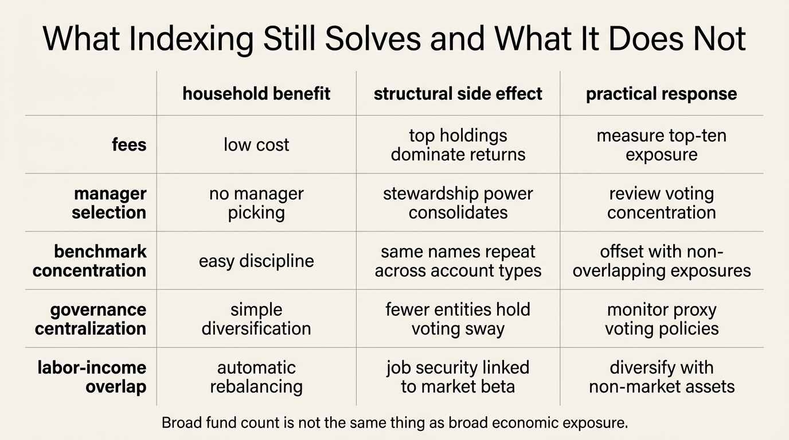

The Indexing Saturation Problem
Indexing still solves the hardest problem most households face: how to get diversified market exposure cheaply without pretending they can outpick professionals. Saturation becomes a problem elsewhere. It appears when benchmark-linked flows become large enough to reward size more than fundamentals at the margin, when ownership overlap grows across competitors, and when too few active dollars remain motivated to do expensive price-setting work.
That distinction matters because the indexing debate is often framed badly. One camp treats passive investing as an obvious, near-total solution for households. The other predicts market failure once passive share gets too high. Both are analytically weak. Established fact: low-cost indexing has accumulated enormous assets because fees matter and most active managers underperform their benchmarks over long horizons. Established fact: the market remains price-setting because passive funds do not eliminate active capital entirely. The more serious issue is structural. Benchmark concentration and ownership concentration can distort incentives and relative pricing long before the market “breaks.”
Core thesis: indexing saturation is not a threshold where markets stop working. It is the point at which the marginal effects of benchmark-linked flows, mega-cap reinforcement, and common ownership begin to matter more than the fee savings that made indexing dominant. For households, indexing remains a strong default. For market structure, saturation risk is already a real design problem.

Why Indexing Won So Decisively
The household case is still straightforward. S&P Dow Jones Indices continues to show, through SPIVA scorecards, that most active managers fail to beat their benchmarks over long horizons after fees. The Investment Company Institute's 2025 ETF data shows how much capital has followed that arithmetic into broad index exposure. This was not a fad. It was a fee and probability decision. Most households do better owning the market cheaply than paying high fees for a low-probability hope of persistent outperformance.
That success also changed behavior. Indexing moved capital out of manager-selection games and into portfolio policy. Households increasingly decide how much equity, how much duration, how much international exposure, and how much liquidity cushion they need. That is mostly healthy. It replaces expensive false precision with a simpler asset-allocation problem. The problem begins when a good household solution scales into a market regime with its own side effects.
Where Saturation Actually Shows Up
The first channel is benchmark reinforcement. Capitalization-weighted indices buy more of what has become larger. Craig Lazzara's defense of cap weighting is correct on its own terms: if the objective is to represent the market, market-cap weighting is the natural answer. The difficulty is not the arithmetic. It is the flow dynamic. When large index inflows hit a cap-weighted benchmark, the largest firms receive the largest marginal demand. Jiang, Vayanos, and Zheng showed this clearly in Passive Investing and the Rise of Mega-Firms. Passive flows disproportionately raise the prices of the largest firms and can strengthen their position even when the original investor decision was simply to switch from active to passive.
The second channel is thinner marginal price discovery. Passive investors accept benchmark weights rather than researching securities one by one. That does not mean prices become uninformative overnight. Koijen, Richmond, and Yogo found that the shift from active to passive had a large impact on equity prices but only a small average effect on price informativeness because capital did not mechanically flow from informed to uninformed investors on average. That is a useful corrective to collapse narratives. It does not eliminate the margin problem. If the fee pool for expensive fundamental research keeps shrinking, fewer investors are paid to correct benchmark-driven dislocations when they appear.
The third channel is ownership overlap. Common ownership research now extends well beyond a few speculative papers. Recent NBER work shows common ownership is rising globally and is especially high among large firms. Other studies show that overlapping owners can alter managerial incentives, soften competition, or change how other capital providers price risk. The market can function while still becoming less competitive and more benchmark-conditioned.
Why This Still Does Not Mean Households Should Abandon Index Funds
The indexing-saturation problem is mainly a system-design problem, not a retail stock-picking invitation. A household does not solve mega-cap concentration by overpaying for mediocre active management. It solves it by understanding that indexing is a tool, not a religion. Broad market exposure remains useful. So do global diversification, equal-weight or capped alternatives in selected sleeves, and conscious position limits around the same mega-caps that dominate both employment and portfolio exposure.
There is also an asymmetry worth stating plainly. Market-structure concerns are real, but they operate at a scale where individual households rarely have a practical edge. The average investor is still more likely to harm themselves by chasing expensive active stories than by holding a low-cost core. The household mistake is not owning index funds. It is assuming that cap-weighted indexing is automatically neutral, complete, and free of concentration risk.

The Hidden Household Risk Is Benchmark Stacking
The most common practical failure is overlap. A worker may own broad U.S. index funds, hold employer stock, rely on compensation from one mega-cap-dominated sector, and believe they are diversified because the brokerage statement lists hundreds of companies. In reality the household is benchmark-stacked. Human capital, equity exposure, and often home-market exposure can all lean on the same cluster of large firms.
This is where saturation becomes a personal finance issue. If the benchmark itself is increasingly top-heavy, then passive ownership can quietly magnify household concentration even while looking broad. That does not make indexing wrong. It means the investor has to audit concentration at the household level rather than at the fund-label level.
A Better Framework Than Passive Versus Active
- Keep low-cost indexing as the core. For most households the fee advantage and broad exposure still dominate the realistic alternatives.
- Measure concentration explicitly. Look at top holdings, sector weights, and overlap with employer income rather than assuming every broad fund is equally diversified in practice.
- Separate household policy from market critique. A valid critique of passive-market structure does not automatically imply that a household should hire active managers.
- Use alternative weighting only with a reason. Equal-weight, capped, or factor sleeves may reduce some benchmark concentration, but they introduce their own turnover, tax, and tracking-error costs.
- Watch governance and competition. The most serious saturation issues may show up in corporate incentives and product-market behavior before they show up in household portfolio returns.
This framework is stricter than the standard debate because it refuses the comforting extremes. Indexing is neither perfect neutrality nor imminent failure. It is an efficient household default that creates genuine system-level side effects once it becomes dominant enough.
Known, Inferred, And Unknown
| Category | Assessment |
|---|---|
| Known | Low-cost indexing attracted massive flows because most active managers underperform benchmarks after fees over long horizons. |
| Known | Passive flows can disproportionately lift the prices and weights of already-large firms, reinforcing mega-cap concentration in capitalization-weighted benchmarks. |
| Known | Common ownership is rising and is especially pronounced among large firms, which creates real governance and competition questions. |
| Inferred | The practical saturation point is less about total passive share and more about whether benchmark-linked demand is changing prices, incentives, and household exposures faster than active correction can offset. |
| Unknown | What level of passive dominance would materially impair price discovery or competition enough to require structural policy changes rather than portfolio-level adaptation. |
The Practical Bottom Line
The indexing boom solved one problem by making market access cheaper and simpler. It created another by concentrating flows, ownership, and incentives in ways that look small in any one trade but large in aggregate. The right response is not to romanticize active management. It is to stop pretending that all low-cost exposure is automatically neutral exposure.
For WealthMeter readers, the operative correction is clear. Use index funds as a core unless you have a defensible reason not to. Then audit what that core actually owns, how top-heavy it has become, and whether your labor income already ties you to the same benchmark winners. Saturation becomes dangerous first where investors fail to notice that their broad exposure is less broad than it looks.
Further Reading Inside The Site
This article connects directly to The Concentration vs Diversification Tradeoff, The Asset-Rich, Cash-Poor Paradox, and The AI Boom and Personal Wealth. Together they show how benchmark design, portfolio concentration, and household liquidity interact under a market dominated by large-cap narratives.
Source List
S&P Dow Jones Indices. SPIVA scorecard series. Accessed for long-horizon active-versus-index evidence.
Investment Company Institute. Exchange-Traded Fund Data, June 2025. 2025.
Jiang H, Vayanos D, Zheng L. Passive Investing and the Rise of Mega-Firms. NBER Working Paper 28253. 2020, rev. 2024.
Koijen RSJ, Richmond RJ, Yogo M. Which Investors Matter for Equity Valuations and Expected Returns?. NBER Working Paper 27402. 2020, rev. 2023.
Antón M, Ederer F, Giné M, Ramirez-Chiang G. Common Ownership Around the World. NBER Working Paper 33965. 2025.
Adler K, Doerr S, Zhu S. Passive investors and loan spreads. BIS Working Paper 1330. 2026.
Lazzara C. Why Cap Weighting?. S&P Dow Jones Indices. 2020.